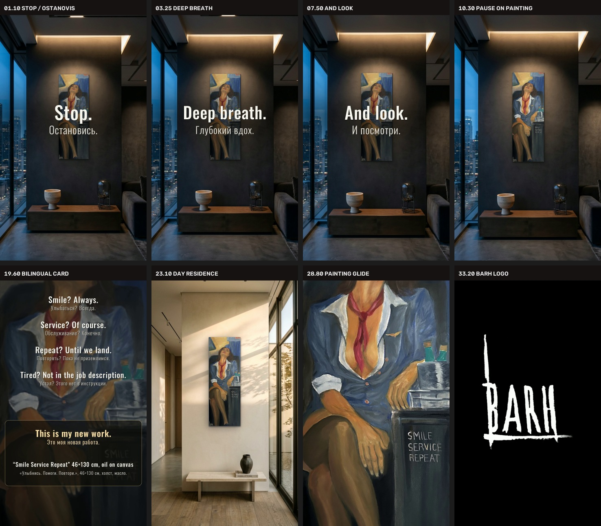

Финальный двуязычный TikTok-ролик 9:16 (34.29 с · −12.9 LUFS) в духе «Secret Dreams» (Space, 1978).
Спокойное дыхание по ~2.1 с на фразу → 3.55 с пауза на самой картине (точный масштаб 46×130 см под потолок ~2.95 м) → двуязычный текст прямо поверх полотна с выделенной нижней плашкой «This is my new work.» → дневная резиденция → проезд → BARH.

▶ Скачать SMILE_SERVICE_REPEAT_BARH.mp434.29 с · 1080×1920 · камерный синти-ноктюрн «Secret Dreams»